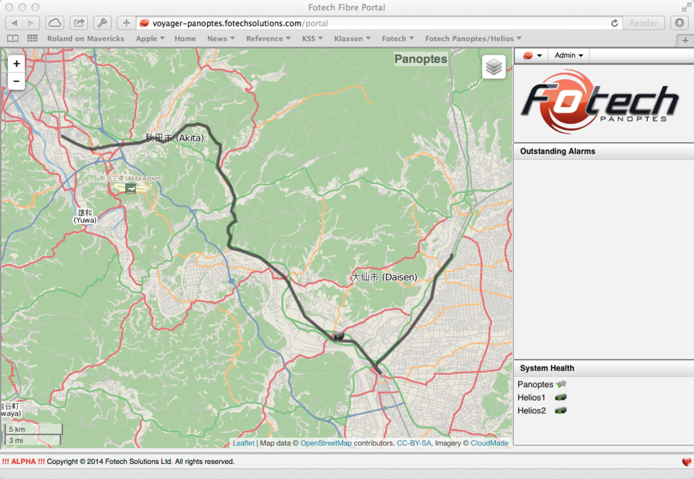
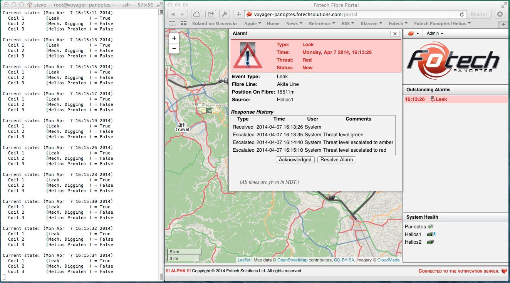
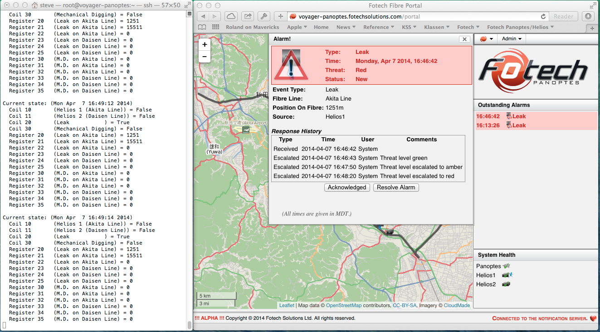
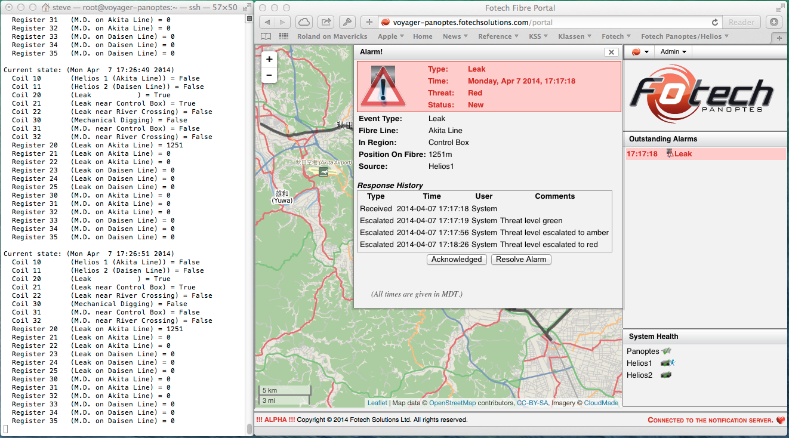

MODBUS Example¶
Executive Summary¶
Objective¶
This document presents a fictional scenario for a MODBUS/SCADA setup. It is designed with three goals in mind.
First, to showcase the things that are possible via MODBUS in Panoptes. This includes showing some of the types of alarms that we can monitor, the items we can place in register data, as well as how we can start with a general setup and narrow in to a more specific one.
Second, to make it clear what sort of communication needs to take place between the Fotech staff and the customer in order to use the MODBUS system. This is important since the details are very much dependant on knowing exactly what it is that the customer is expecting. While Fotech can setup a generic MODBUS configuration for a FAT, the real setup needed for a SAT typically requires a few iterations of back and forth between the Fotech staff and the customer in order to get the configuration correct.
Third we provide an example, based on a fictional scenario, that can be used as a starting point for the real customer’s system.
Intended Audience¶
There are three groups of people who should be interested in this document.
First, for the sales staff, this document shows what we can and cannot do via the MODBUS protocol. This can help clarify if we will be able to meet a given project proposal with the software as it is now, or if changes will be needed.
Second, for the field engineers, this document can be used to clarify what is found in the Field Engineer’s Manual. That manual describes the mechanics of how to configure the MODBUS component, but it is not as each to read as this document.
Third, for the customer’s technical staff, this document can help clarify just what it is that we need to get from them in order to configure the MODBUS system.
The Scenario¶
The fictional company¶
“XYZ Gas” is what we will call the fictional company in this example. They have a pipeline in northwestern Japan that they wish to monitor for leaks and for mechanical digging events. (If it looks like it is following a railway that is because I had my GPS tracking my train trip from Akita back to Tokyo a couple of years ago and a portion of that track is what I chose to use for this scenario.) For the initial trial they have selected a 60km section which will be monitored by two Helios units. The two fibres will be broken into a 40km section, called the Akita Line, and a 20km section, called the Daisen Line. Both will be monitored from a control room situated on the western outskirts of Daisen. That position is marked on the map with the icons for the two Helios units.
Imagine that the project began with the Fotech sales staff showing the management of XYZ our “farm” setup with a Helios unit connected to a Panoptes. They liked the simple interface and how the alarms would show up on the map so that the operators could be informed and deal with them, so they decided that they would initiate a purchase of our system.
But when they returned to their own company their operators told them that while the map display was kind of cool to show to people, they already have a SCADA system that ties in with all their engineering and notification servers. So why would they want another interface except to show at board meetings? This resulted in a followup with the Fotech sales staff who suggested that perhaps they would like to use our MODBUS component which allows the Panoptes system to communicate with a SCADA system.
Progression of the scenario¶
We will describe this scenario in three stages. We will start with a very simple setup - probably far simpler than any real world example. Then we will describe some “scope creep” in two additional stages showing how the communication between Fotech and the customer may progress over time and how this impacts the configuration. In so doing we will provide examples of just what is possible with our MODBUS component.
XYZ has decided that their first setup will be a relatively simple system consisting of two Helios units communicating with one Panoptes. (Other things can also be monitored such as the cabinet temperature, the health of the network, and so on. Essentially anything that can produce an alarm popup in our Panoptes display can be communicated via the MODBUS component.)
The following image shows the pipeline route. The 40km section is called the “Akita Line” and starts from the Helios units moving to the North-West. The 20km section is called the “Daisen Line” and starts from the Helios units moving South- East then turning North-East.
Communication between Fotech and the customer¶
What types of alarms are to be monitored?
The first thing that needs to be decided is what alarms are to be communicated via the MODBUS interface. It is important to realize that our MODBUS integration only allows two types of information to be communicated. The first is binary information such as the existence or absence of a problem. These are reported as “coils” in the MODBUS communications. The second type is a “register”, which store 16-bit unsigned integers. Typically we use these to report a position along the fibre, but they can be used to communicate any integer type (but limited to a maximum value of ~65000) that we track for an alarm. If necessary, a 32 bit unsigned integer can be decomposed into it’s high-order word(first 16 bits) and low-order word (last 16 bits), and stored in two neighbouring registers. This way, we can store values to a maximum value of ~4.2billion.
As noted earlier our fictional system will report on leaks, mechanical digging, and Helios problems.
What coils and registers are to be used?
Once the types of alarms have been decided, the next thing that must be agreed on is what coils and registers are to be used in the MODBUS communication. We would want this to occur as early as possible so that both sides can get on with their work. On the Fotech side the Panoptes system would need to be configured with the various alarm settings, regions definitions, fibre line calibrations, etc. in addition to the actual MODBUS configuration. On the customers side their engineers would need to create/modify their SCADA system so that it will query our MODBUS component for the agreed upon coils and registers.
The output from this stage of communications would typically be a chart or spreadsheet showing the coils and registers and describing specifically what it means when one is set.
Stage 1¶
Scenario¶
For the first stage the customer figures that all they want to use their SCADA system for is to identify the existence of a problem. It is assumed that the operators will then look at the Panoptes screen to asses just where the problem lies.
To this end, all they want to know is whether there is a leak, a mechanical dig, or a Helios unit problem.
Coils and registers¶
After discussions with the customer’s technical staff it is decided that we will use three coils as shown in this table.
Description |
Coil |
|---|---|
A leak has been detected |
1 |
A mechanical dig has been detected |
2 |
There is a problem with a Helios unit |
3 |
Panoptes configuration¶
The Panoptes MODBUS configuration is always defined in the file /usr/local/Fotech/etc/ modbus_configuration.xml. For this example, it would look like the following:
<?xml version="1.0" encoding="UTF-8"?>
<modbus_configuration>
<coil ref="1">
<label>Leak</label>
<alert-type-filter name="leak_alert"/>
</coil>
<coil ref="2">
<label>Mech. Digging</label>
<alert-type-filter name="mech_digging_alert"/>
</coil>
<coil ref="3">
<label>Helios Problem</label>
<alert-type-filter name="helios"/>
</coil>
</modbus_configuration>
Note that each of the coils has an individual entry in the configuration file. The “ref” attribute specifies which MODBUS coil will be reset. The “label” tag is actually ignored by the MODBUS protocol but will be used by our testing script to make it easier to see which coil (or register) is which. This is followed by an “alert-type-filter” tag which specifies which type of alert in our system will trigger this coil to be set. Note that event type alerts have the name of the event type followed by “_alert” while the system alerts just have the name of the component, such as “helios”, “panoptes”, “cabinet”, etc. The full details of the options can be found in the field engineer’s manual.
Testing the configuration¶
The ultimate test requires that the customer has setup their SCADA system to be polling the MODBUS port on our Panoptes machine. But in the meantime we provide a python script on the Panoptes machine itself that can be used for testing purposes.
First you need to perform a “panoptes restart” in order to make the configuration take effect. Once that is done you can run the command /usr/local/Fotech/bin/modbus_monitor which will poll the MODBUS port every few seconds and print out the status of the coils and registers found in the configuration file.
The following image shows a test with a simulated leak alarm. Notice that the alarm shows up both in the Panoptes window, and as a set coil (coil 1) in the MODBUS test window.
Stage 2¶
Scenario¶
After running some tests with this system it quickly becomes apparent that the mere existence of a problem is probably not enough. After all their SCADA system is probably quite capable of turning a distance into a more accurate location of where to look. In addition it would be nice to know which Helios unit has reported the problem.
So after additional discussions with XYZ it is decided that we will assign coils for leak and mechanical digging alarms separately for each of the helios units. In addition we will assign the position of up to 3 alarms of each type per Helios unit to registers so the SCADA system can make use of that information.
Coils and registers¶
Once again we need to communicate with the XYZ technical staff in order to agree on the meaning of the coils and registers set via the MODBUS protocol. After some discussion we decide that we use two separate coils for the Helios problems, one for each Helios unit, but we will keep a single coil for each alarm type (i.e. leak and mechanical digging) but we will add three registers for each event based alarm type. These registers will be set to contain the position along the fibre of up to three leaks and/or mechanical digging events per Helios unit. It was also decided that we would reorder the coils from the previous version so that the “system” alarms (i.e. Helios unit failures) would be in the upper coils and the leak and digging alarms would be in later “blocks.
Once the specific details were agreed on, we had this chart.
Description |
Coil |
Registers |
|---|---|---|
Problem with Helios 1 (Akita Line) |
10 |
|
Problem with Helios 2 (Daisen Line) |
11 |
|
Leak exists… |
20 |
|
… on the Akita line |
20-22 |
|
… on the Daisen line |
23-25 |
|
Mechanical dig in progress… |
30 |
|
… on the Akita line |
30-32 |
|
… on the Daisen line |
33-35 |
Panoptes configuration¶
To implement this we modify the modbus_configuration.xml file to be the following.:
<?xml version="1.0" encoding="UTF-8"?>
<modbus_configuration>
<coil ref="10">
<label>Helios 1 (Akita Line)</label>
<alert-type-filter name="helios"/>
<alert-detail-filter key="helios_unit_id">7</alert-detail-filter>
</coil>
<coil ref="11">
<label>Helios 2 (Daisen Line)</label>
<alert-type-filter name="helios"/>
<alert-detail-filter key="helios_unit_id">8</alert-detail-filter>
</coil>
<coil ref="20">
<label>Leak</label>
<alert-type-filter name="leak_alert"/>
</coil>
<registers first="20" number_of_alarms="3" event_tag_detail="position">
<label>Leak on Akita Line</label>
<alert-type-filter name="leak_alert"/>
<alert-detail-filter key="fibre_line_name">Akita Line</alert-detail-filter>
</registers>
<registers first="23" number_of_alarms="3" event_tag_detail="position">
<label>Leak on Daisen Line</label>
<alert-type-filter name="leak_alert"/>
<alert-detail-filter key="fibre_line_name">Daisen Line</alert-detail-filter>
</registers>
<coil ref="30">
<label>Mechanical Digging</label>
<alert-type-filter name="mech_digging_alert"/>
</coil>
<registers first="30" number_of_alarms="3" event_tag_detail="position">
<label>M.D. on Akita Line</label>
<alert-type-filter name="mech_digging_alert"/>
<alert-detail-filter key="fibre_line_name">Akita Line</alert-detail-filter>
</registers>
<registers first="33" number_of_alarms="3" event_tag_detail="position">
<label>M.D. on Daisen Line</label>
<alert-type-filter name="mech_digging_alert"/>
<alert-detail-filter key="fibre_line_name">Daisen Line</alert-detail-filter>
</registers>
</modbus_configuration>
Note that our coils and our registers do not have to be contiguous. It doesn’t hurt anything to have “gaps” between them. In fact, leaving such gaps can make it easier to extend the protocol later (as we will see in Stage 3) while keeping things grouped in a logical form and without having to reorder everything. Also notice how the coil settings for the Helios units have a new filter tag that limits the coil based on the helios unit id. While the leak and mechanical digging settings leave those out. That gives us a separate coil for each Helios unit problem, but only one coil for each alarm type.
Testing the configuration¶
After restarting the system we simulated two leaks, both on the Akita line, so that we could see how the multiple registers work. You can see that there are two outstanding alarms listed in the Panoptes portal, but only one coil is set (the Leak coil). However two of the registers are set in the “Leak on Akita Line” registers. These show that the two leaks are occurring at the 1.2km mark and the 15.5km mark (remember the registers are 16 bit integers so we show metres instead of kilometres).
Stage 3¶
Scenario¶
XYZ is much happier with this setup as they now have useful information regarding the location of the problems. However their technicians are still not happy. In particular they have a few “sensitive” areas in their system and they would like to make it clear when a problem occurs in one of those areas. Specifically they would like to use a coil to specify when there is a problem in a particular area, in addition to having the position shown in the registers.
This results in some back-and-forth discussion on whose job it is to handle this level of notification - after all with the positions in the registers it should be possible for the SCADA system to interpret those positions and raise the appropriate alarms. But at the end of the day it is decided that Fotech will handle this by using a few more coils to show leaks in the sensitive areas.
Coils and registers¶
There are two areas in particular that we will use in this scenario. (Typically there would be many but we will just show two.) These consist of a river crossing north of the Akita airport and a control box on the western outskirts of Daisen. Through a series of “tap tests” we have determined that the river crossing is covered by metres 31524 - 32590 and the control box by metres 1245 - 1255. It is decided that two more coils will be added to each of the leak and mechanical digging settings in order to flag a problem in these areas. Hence our coil and register chart now looks like this chart.
Description |
Coil |
Registers |
|---|---|---|
Problem with Helios 1 (Akita Line) |
10 |
|
Problem with Helios 2 (Daisen Line) |
11 |
|
Leak exists… |
20 |
|
… near the control box |
21 |
|
… near the river crossing |
22 |
|
… on the Akita line |
20-22 |
|
… on the Daisen line |
23-25 |
|
Mechanical dig in progress… |
30 |
|
… near the control box |
31 |
|
… near the river crossing |
32 |
|
… on the Akita line |
30-32 |
|
… on the Daisen line |
33-35 |
Panoptes configuration¶
Our current MODBUS module does not allow us to filter based on less than or greater than comparisons hence we don’t have a way of saying we want coil 21 to light up if there is a leak in the region of 1245-1255metres on the Akita line.
Instead we must do this in two steps. First we define what we call “regions” covering the two areas of interest. Then we modify the XML to use those regions as one of the filters.
How to define the regions is not the subject of this paper, so suffice it to say that once the two regions are defined, it will look like this in the Panoptes admin display.
Once these are defined we can make the necessary changes in the XML file by adding these sections:
<?xml version="1.0" encoding="UTF-8"?>
<modbus_configuration>
...
<coil ref="21">
<label>Leak near Control Box</label>
<alert-type-filter name="leak_alert"/>
<alert-detail-filter key="in_region_user">Control Box</alert-detail-filter>
</coil>
<coil ref="22">
<label>Leak near River Crossing</label>
<alert-type-filter name="leak_alert"/>
<alert-detail-filter key="in_region_user">River Crossing</alert-detail-filter>
</coil>
...
<coil ref="31">
<label>M.D. near Control Box</label>
<alert-type-filter name="mech_digging_alert"/>
<alert-detail-filter key="in_region_user">Control Box</alert-detail-filter>
</coil>
<coil ref="32">
<label>M.D. near River Crossing</label>
<alert-type-filter name="mech_digging_alert"/>
<alert-detail-filter key="in_region_user">River Crossing</alert-detail-filter>
</coil>
...
</modbus_configuration>
Notice how, since we allowed “gaps” in our coils settings in the previous stage, we only needed to add the new settings, we didn’t have to reorder anything. This also implies that the SCADA programmers would not have to change the work they had done during stage two, but would only need to add the appropriate new settings.
Testing the configuration¶
After restarting the system we once again simulate a leak, this time near the control box. This gives us the following results. Note that while there is only one alarm shown in Panoptes, there are two coils, plus one register set in the MODBUS output. The two coils are 20 (a leak exists) and 21 (a leak exists near the control box) and the register shows the position of the leak as being 1251m along the fibre.
Accounting for event_tag_detail with unsigned 32 bit integers¶
Suppose the two fibres, Akita Line and Daisen Line, were monitoring an 160km section and are broken into two 80km sections. Then we have the potential for an alarm occur on a distance greater than 65000m on both lines and we must use 2 adjacent registers to store this information. Since we want to store 3 alarms worth of data, this will require 6 registers for each line, instead of the traditional 3. We introduce this change using the “registers_per_alarm” tag, and must adjust the starting register for the Daisen Line. The Akita line will go from 30-35 and the Daisen line from 36 to 41.:
<?xml version="1.0" encoding="UTF-8"?>
<modbus_configuration>
...
<registers first="30" number_of_alarms="3" event_tag_detail="position" registers_per_alarm="2">
<label>M.D. on Akita Line</label>
<alert-type-filter name="mech_digging_alert"/>
<alert-detail-filter key="fibre_line_name">Akita Line</alert-detail-filter>
</registers>
<registers first="36" number_of_alarms="3" event_tag_detail="position" registers_per_alarm="2">
<label>M.D. on Daisen Line</label>
<alert-type-filter name="mech_digging_alert"/>
<alert-detail-filter key="fibre_line_name">Daisen Line</alert-detail-filter>
</registers>
...
</modbus_configuration>
The registers (30,31), (32,33), and (34,35) would correspond to the high-order and low-order words of three 32 bit unsigned integers. Similarily, (36,37), (38,39) and (40,41) would represent three 32 bit unsigned integers.
To recovery the 32 bit integers, for example, we could store each of the 16 bits in unsigned 32 bit integers A and B. Then bit shift A by 16 bits, and logical-or it with B. For e.g.:
Register 30 = 1010 1111 0000 1111
Register 31 = 0101 1111 1111 0000
A = 0000 0000 0000 0000 1010 1111 0000 1111
A << 16 = 1010 1111 0000 1111 0000 0000 0000 0000
B = 0000 0000 0000 0000 0101 1111 1111 0000
Recovered 32 unsigned integer: C = (A << 16) | B
C = 1010 1111 0000 1111 0101 1111 1111 0000
Conclusion¶
What is the system currently capable of?¶
TCP/IP communication
At present our MODBUS system only handles TCP/IP based communications. These are available on the Panoptes unit on the standard MODBUS port (port 502). Any number of outside systems can poll that port in order to view the state of the system.
Alarm types
Any alarm that can cause an alarm popup to be shown in Panoptes can be configured to trigger a coil in the MODBUS component. These include both “system” alarms such as a loss of communication with a Helios unit, or a high temperature inside a cabinet, as well as “event” alarms such as detecting a fibre break, or a leak, etc.
Items that can be used in filters
The filters can be applied both to the coils and to the registers settings. There are two types of filters available. The alarm type filter allows filtering based on the alarm types as given above, and the alarm detail filters allow filtering based on the details stored with an alarm. These details include things such as the Helios unit, the fibre line, and whether or not the alarm occurred within a given region. Note that at present the filters are only for equality matches.
Values that can be shown in registers
In theory any alarm detail that can be represented by a 16 or 32 bit integer can be shown in the registers. In practice the only useful value is the position (in metres) along the fibre line. We can also store 32 bit integers by using two adjacent registers.
What can be added with relatively little cost?¶
Serial port communication
While our MODBUS system only handles TCP/IP communications, the underlying library we are using also supports serial communications. If we were to add this, it would require a moderate amount of work, primarily in determining how to configure what serial port to use and setting up an appropriate test system.
Custom values to be used in filters or shown in registers
Our alarming system has the ability for us to add custom plugins for individual customers. Some of the things we have done in the past with these plugins include: * Turning on/off a Klaxxon based on the position on the fibre * Computing a distance along the ground from a set marker, and * Reconfiguring the Helios units to try to deal with fibre breaks and Helios failures (if suitable redundancy exists).
The second of these would be well suited to inclusion in our registers. Similarly any plugin that computes a value that we can do an equality comparison on could be used in our filters, and any that compute a value that we can represent as a 16 bit integer (or potentially 32 bit integer) could be used in our registers.
Do I really have to edit XML?
Yes (and no). At present we have not completed tools to make this easy so the only way to configure it is via the XML file. However this is typically the job of the Fotech field engineers hence the customer would start with a fully configured system that they could modify if they so desired.